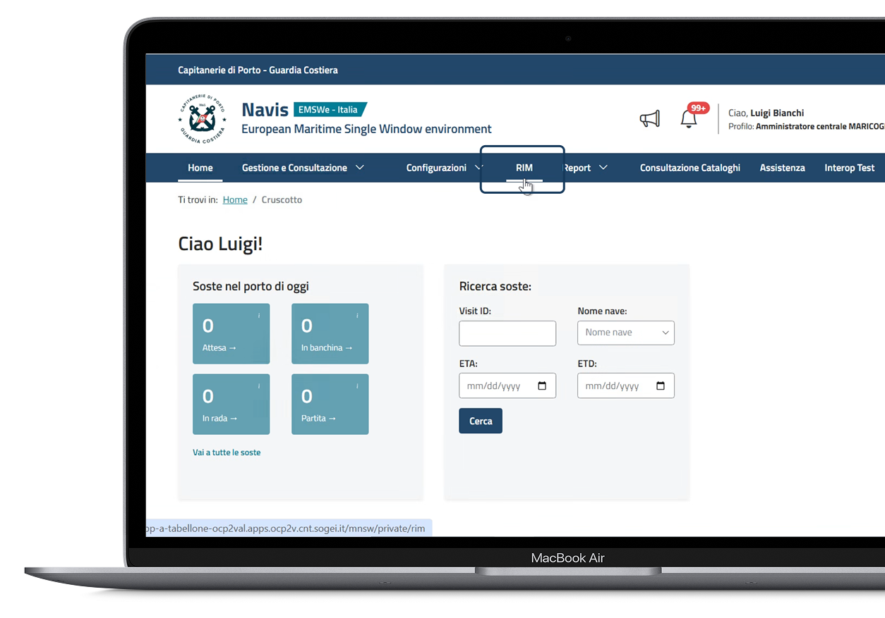
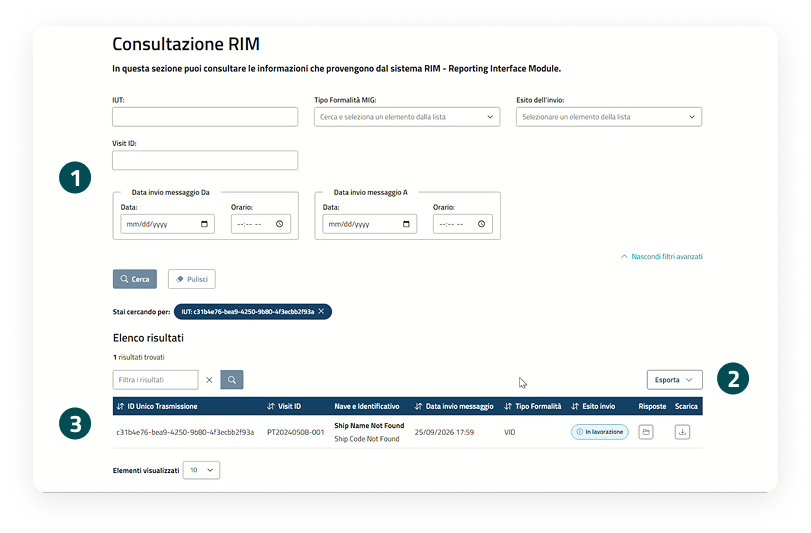
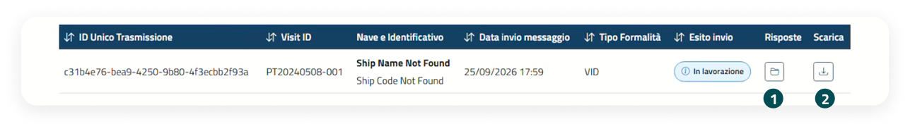
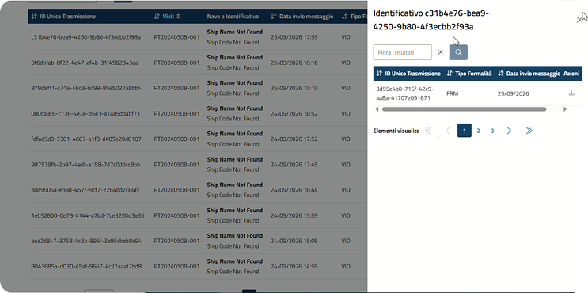
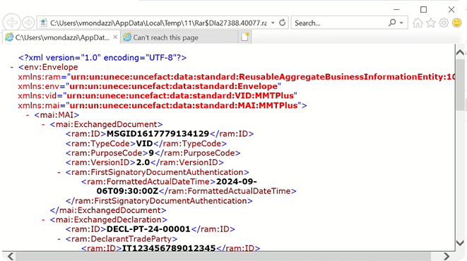

Consultazione RIM
Il portale delle Smart Guide è uno spazio digitale che raccoglie risorse pratiche e aggiornate in un unico ambiente intuitivo. Strumenti chiari e organizzati per organizzarti e trovare subito ciò che ti serve.
01.
Consultazione RIM
Una panoramica sulla consultazione delle informazioni provenienti dal sistema RIM - Reporting Interface Module.
Punto di accesso
La voce di menù
Dalla dashboard, è possibile accedere alle principali sezioni tramite le voci di menu.
Menu a tendina
Cliccando sulla voce "RIM" l'utente viene indirizzato alla pagina di consultazione delle informazioni che provengono dal sistema RIM: Reporting Interface Module.

Ricerca e consultazione
Funzionalità in pagina
È possibile avviare la ricerca utilizzando i filtri semplici e avanzati disponibili. La schermata è suddivisa nelle seguenti tre sezioni:
Filtri di ricerca
La sezione filtri consente di ricercare le informazioni che provengono dal sistema RIM secondo diversi criteri. Sono disponibili filtri base, come IUT (Identificativo univoco della trasmissione), Tipo Formalità MIG, Esito dell'invio, Visit ID, e filtri avanzati per affinare la ricerca per Data invio messaggio Da e Data invio messaggio A (data e orario). I filtri applicati sono visualizzati e cancellabili.
Azioni sulla tabella
È possibile sia esportare i risultati di ricerca attraverso il pulsante "Esporta", sia filtrare ulteriormente i risultati di ricerca valorizzando il relativo campo.
Visualizzazione messaggi tramite tabella
I risultati della ricerca vengono presentati in una tabella, mostrando le informazioni principali e le azioni disponibili per singolo messaggio: visualizzazione risposte e "Scarica".

Consultazione RIM
Azioni sul RIM

Risposte
Cliccare sull'icona della cartella per visualizzare tutte le risposte ricevute per il messaggio. Si apre una finestra laterale dove, per ciascuna risposta, viene visualizzato:
- ID Unico Trasmissione;
- Tipo Formalità;
- Data invio messaggio;
- pulsante con icona per effettuare il download del messaggio XML di risposta e degli eventuali file allegati.

Scarica .xml
Cliccare sul pulsante con l'icona del download per scaricare il messaggio in formato .XML.
